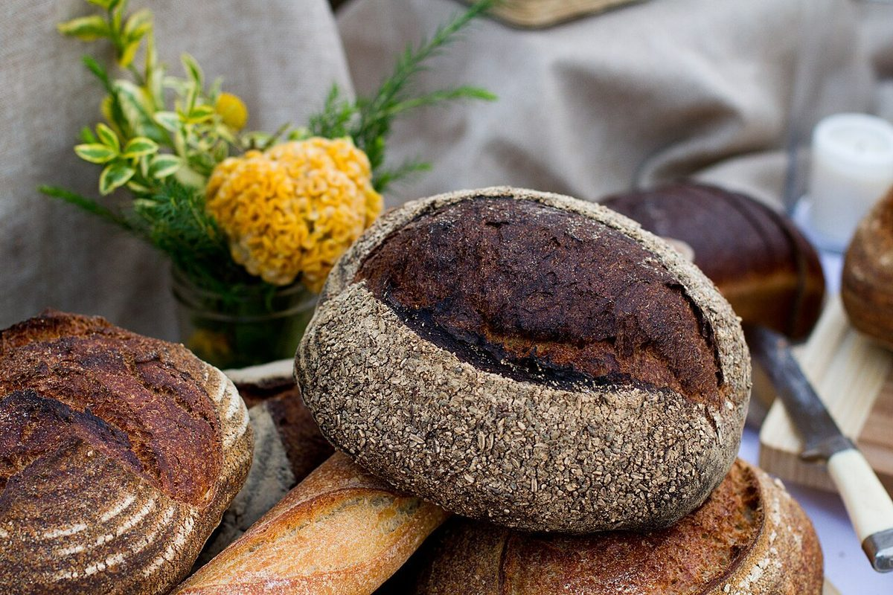
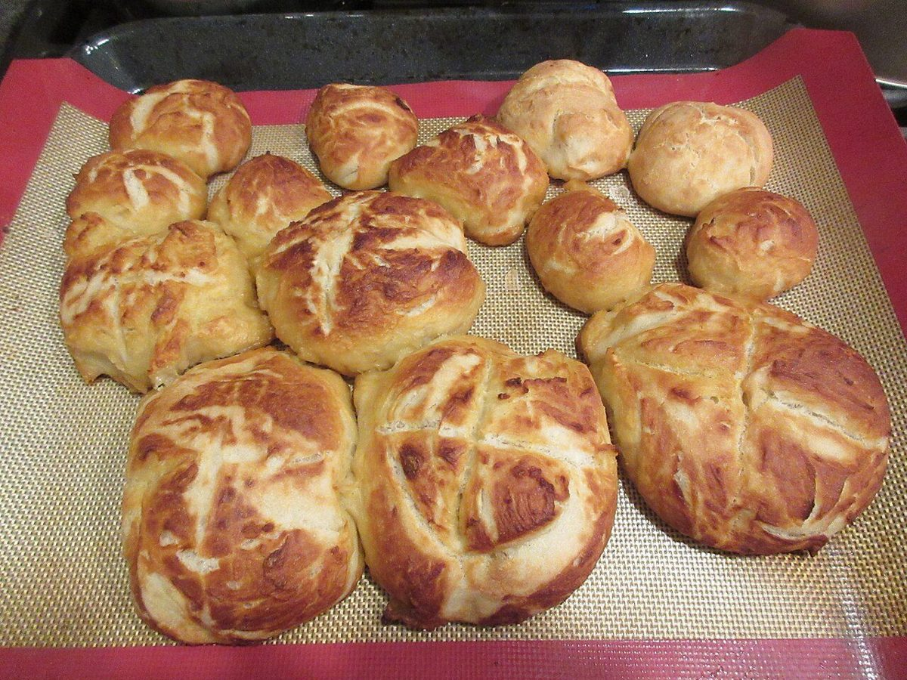
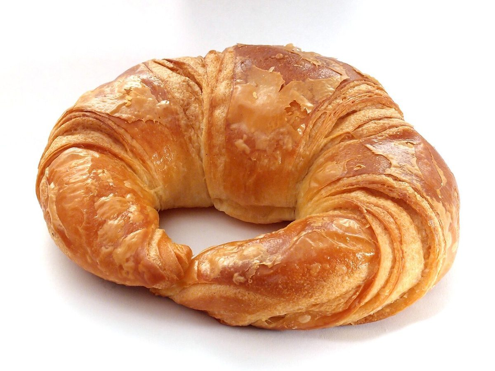

N
SYM
S
PATHY

千葉県流山市 / ベーカリー
ベーカリーシンパシー
ベーカリーシンパシーのご案内ページです。営業時間・メニューなど詳しいことは準備中。確認できているのは所在地とInstagramのみです。
制作側の連想
シンパシーから、引き合う磁石を思った
店名の「シンパシー」から、制作側は磁石のN極とS極が引き合う様子を連想しました。そこでこのサイトは、赤(N)と青(S)の二色で組み、写真もふたつ向かい合わせに並べています。制作側の連想で、お店の理念・由来とは無関係です。
N
イメージ写真
S
イメージ写真
N
イメージ写真
S
イメージ写真
鉄粉のように散らす
パンのイメージ写真
店の商品ではなく、フリー素材のイメージです。






ご案内
確認できていること
| 所在地 | 〒270-0115 千葉県流山市江戸川台西２丁目１８８−２ |
|---|---|
| 電話 | なし |
| 営業時間 | 準備中 |
| 定休日 | 準備中 |
| ご予約 | 準備中 |
| 駐車場 | 準備中 |
| @bakery_sympathy |